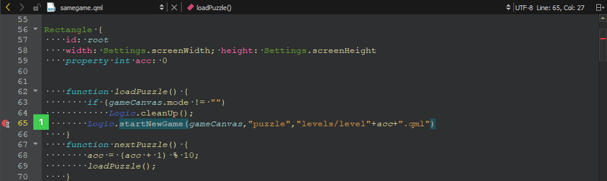
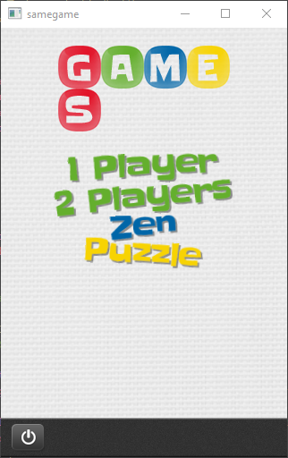
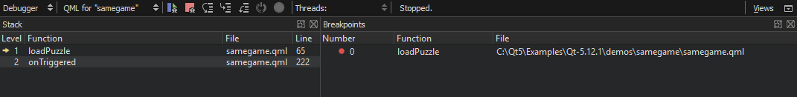
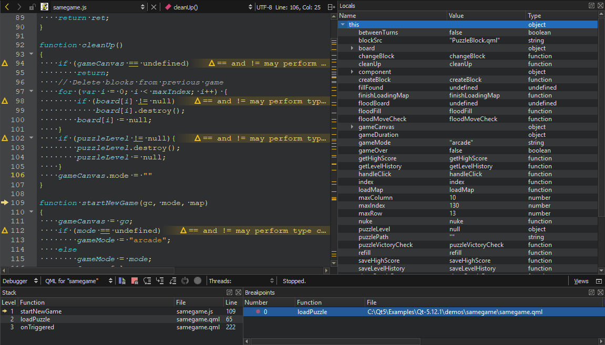
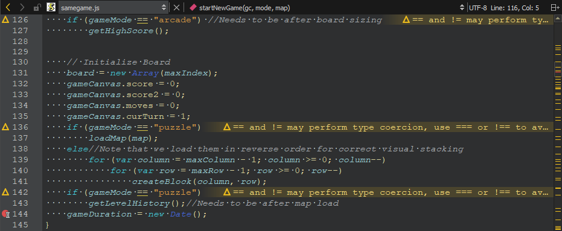
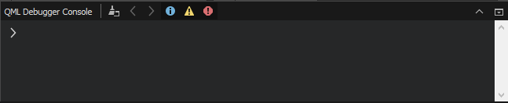
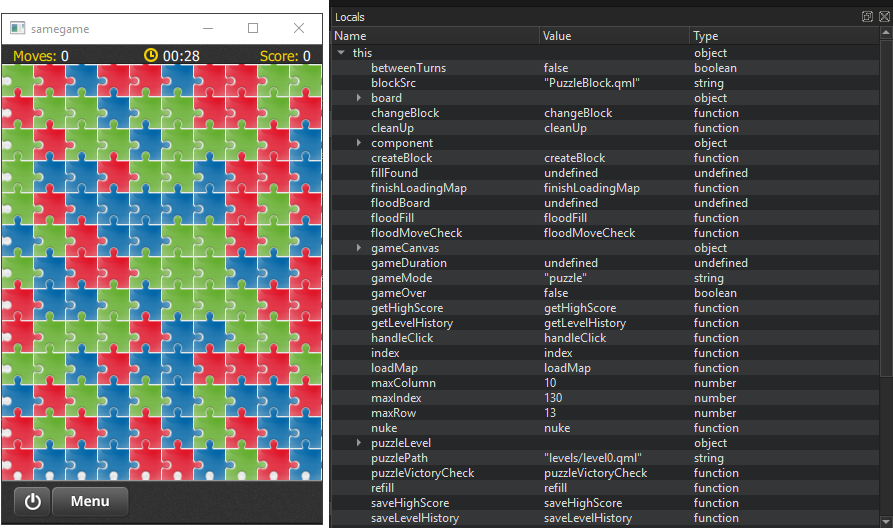

Debugging a Qt Quick Example Application
This section uses the Same Game example application to illustrate how to debug Qt Quick applications in the Debug mode.
For more information about all the options you have, see Debugging Qt Quick Projects.
Note: In this section, you are using advanced menu items. These are not visible by default. To toggle the visibility of advanced menu items, see Customizing the Menu.
The Same Game demo shows how to write a game in QML, using JavaScript for all the game logic. Open the demo project in Qt Design Studio to debug it:
- To look at the code that starts a new game, place a breakpoint in samegame.qml by clicking between the line number and the window border on the line where the
startNewGame()function is called (1).
The red circle indicates that a breakpoint is now set on that line number.
- Select Debug > Start Debugging > Start Debugging of Startup Project or press F5.
- Once the Same Game application starts, select Puzzle to start a new game.

- When the debugger hits the breakpoint, it interrupts the application. Qt Design Studio displays the nested function calls leading to the current position as a call stack trace (1).

- Click the (Step Into) button on the toolbar or press F11 to step into the code in the stack. The samegame.js file opens in the code editor at the function that starts a new game.

- Examine the local variables in the Locals view. Step through the code to see how the information changes in the view.
- Add a breakpoint at the end of the
startNewGame()function, and click (Continue) to hit the breakpoint.
- To execute JavaScript commands in the current context, open the QML Debugger Console.

- To remove a breakpoint, right-click it and select Delete Breakpoint.
- In the Locals view, explore the object structure at runtime.

- Select Debug > Show Application on Top to keep the application visible while you interact with the debugger.
- Select Debug > Select to activate selection mode and then click the Menu button to move into the menuButton component in the Locals view and the code editor.
- In the Locals view, double-click the value of a property to change it.